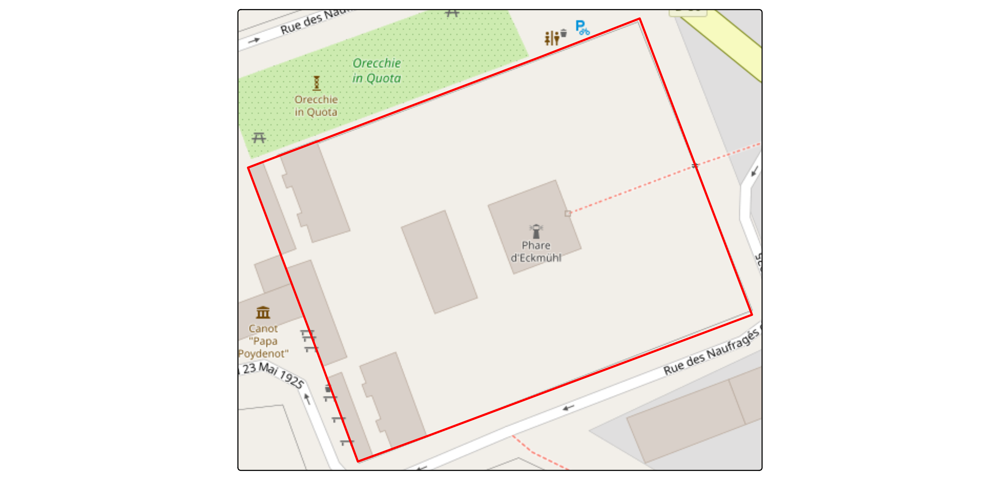
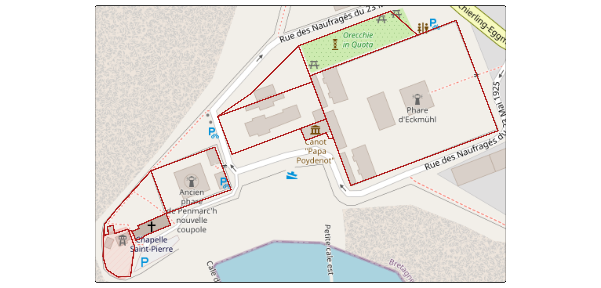
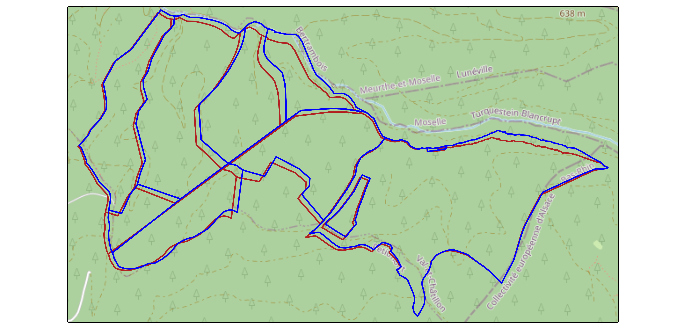
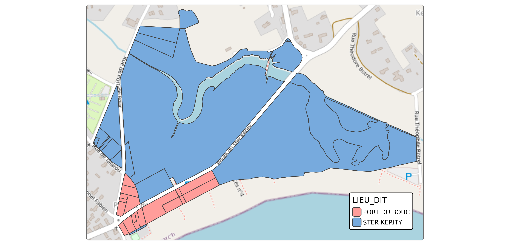
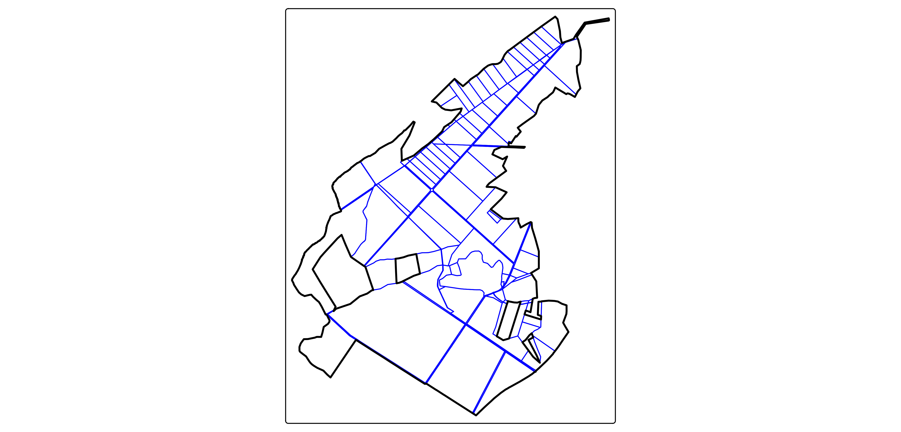

Parcelles Cadastrales (FR)
02_cadastral-parcels-fr.Rmd
library(Rsequoia2)
library(tmap)
library(openxlsx2)
library(sf)
#> Linking to GEOS 3.12.1, GDAL 3.8.4, PROJ 9.4.0; sf_use_s2() is TRUE1. Fonction “base”
Rsequoia2 permet de télécharger les parcelles
cadastrales à partir de leur IDU à l’aide de la fonction
get_parca().
1.1. L’Identifiant unique
L’IDU est un code à 14 caractères qui identifie de manière unique une parcelle cadastrale en France.
Il est composé :
- du code département (2 caractères)
- du code commune (3 caractères)
- du préfixe (3 caractères)
- de la section (2 caractères)
- du numéro de parcelle (4 caractères)
Par exemple : 29158000AX0696
-
"29"-> Code du département (2 chiffres)
-
"158"-> Code de la commune (3 chiffres)
-
"000"-> Préfixe / code abs (3 chiffres)
-
"AX"-> Section (2 caractères)
-
"0696"-> Numéro de parcelle (4 chiffres)
idu <- c("29158000AX0696")
cp <- get_parca(idu)
tm_tiles("OpenStreetMap")+
tm_shape(cp)+
tm_borders(col = "red", lwd = 2)+
tm_layout(bg = F)
get_parca() est vectorisé donc plusieurs idu peuvent
être fournis.
idus <- paste0("29158000AX0", 696:704)
cp <- get_parca(idus)
tm_tiles("OpenStreetMap")+
tm_shape(cp)+
tm_borders(col = "firebrick", lwd = 2)
1.2. BDP et lieux-dits
get_parca() propose deux arguments :
bdp_geom et lieu_dit.
1.2.1. bdp_geom - BD Parcellaire
La BDP (Base de Données Parcellaire) est un ancien produit de l’IGN qui n’est aujourd’hui plus maintenu.
Elle a été initialement construite à partir des parcelles cadastrales Etalab, mais de nombreuses géométries ont été corrigées manuellement par l’IGN afin de mieux correspondre aux limites observées sur le terrain.
L’utilisation de la BDP peut ainsi améliorer la précision géométrique, sans toutefois garantir une correspondance parfaite avec les limites cadastrales légales.
Pour utiliser les géométries issues de la BDP avec
get_parca(), définissez l’argument
bdp_geom = TRUE. Lorsque la géométrie BDP existe pour un
IDU donné, elle remplace automatiquement la géométrie Etalab
correspondante.
idus <- paste0("545400000C0", 101:109)
etalab <- get_parca(idus, bdp_geom = FALSE)
bdp <- get_parca(idus, bdp_geom = TRUE)
#> ℹ Downloading BDP from IGN...
#> ✔ 9 of 9 ETALAB geom successfully replaced with BDP geom.
tm_tiles("OpenStreetMap")+
tm_shape(etalab)+
tm_borders(col = "firebrick", lwd = 2)+
tm_shape(bdp)+
tm_borders(col = "blue", lwd = 2)
1.2.2. lieu-dit - Lieu-dit
Un lieu-dit est un nom de localisation associé à une parcelle cadastrale. Bien qu’il ne soit pas indispensable pour les traitements cadastraux, il est souvent utile pour vérifier que les parcelles récupérées correspondent bien à la zone géographique attendue.
Par défaut, les parcelles cadastrales Etalab ne contiennent pas
l’information de lieu-dit. Cependant, un jeu de données existe, et
get_parca() permet d’intersecter cette couche lorsque que
lieu-dit = TRUE
*/!* : cette jointure spatiale peut être relativement longue pour un grand nombre de parcelles.
idus <- paste0("29158000BD00", c(10:12, 14:19, 21:25, 29, 31:36, 38, 39, 41, 43:60))
with_lieu_dit <- get_parca(idus, lieu_dit = TRUE)
#> ℹ Downloading and joining Lieux dits...
#> ✔ Lieux dits joined.
tm_tiles("OpenStreetMap")+
tm_shape(with_lieu_dit)+
tm_polygons(
fill = "LIEU_DIT",
fill.legend = tm_legend(position = c("right", "bottom")))
1.3. Application à un exemple forestier
La forêt étudiée dans l’article sera la forêt de Brin, propriété de l’école forestière de Nancy, située à Brin-Sur-Seille, dans le département de Meurthe-Et-Moselle (54).
idu <- c(
"540120000C0001", "540120000C0005", "540120000C0007", "540120000C0008",
"540120000C0009", "540120000C0010", "540120000C0011", "540120000C0012",
"540120000C0016", "540120000C0018", "540120000C0069", "540120000C0071",
"540120000C0073", "540120000C0077", "540700000C0002", "540700000C0003",
"540700000C0004", "540700000C0005", "540700000C0006", "540700000C0007",
"540700000C0008", "540700000C0009", "540700000C0010", "540700000C0011",
"540700000C0012", "540700000C0013", "540700000C0108", "540700000C0109",
"540700000C0110", "540700000C0111", "540700000C0112", "540700000C0113",
"540700000C0114", "540700000C0115", "540700000C0116", "540700000C0117",
"540700000C0118", "540700000C0119", "540700000C0120", "540700000C0121",
"54070000ZB0060", "540890000C0927", "540890000C0928", "540890000C1031",
"541000000A0001", "541000000A0002", "541000000A0003", "541000000A0004",
"541000000A0005", "541000000A0006", "541000000A0007", "541000000A0008",
"541000000A0009", "541000000A0010", "541000000A0011", "541000000A0012",
"541000000A0013", "541000000A0014", "541000000A0015", "541000000A0016",
"541000000A0018", "541000000A0019", "541000000A0029", "541000000A0030",
"541000000A0031", "541000000A0032", "541000000A0033", "541000000A0034",
"541000000A0035", "541000000A0036", "541000000A0037", "541000000A0038",
"541000000A0039", "541000000A0040", "541000000A0041", "541000000A0042",
"541000000A0043", "541000000A0044", "541000000A0045", "541000000A0046",
"541000000A0055", "541000000A0056", "541000000A0057", "541000000A0058",
"541000000A0059", "541000000A0060", "541000000A0061", "541000000A0062",
"541000000A0063", "541000000A0064", "541000000A0066", "541000000A0067",
"541000000A0076", "541000000A0080", "541000000A0081", "541000000A0083",
"541000000A0085", "541000000A0086", "541000000A0092", "541000000A0093",
"541000000A0094", "541000000A0095", "541000000A0098", "541000000A0099",
"541000000A0148", "541000000A0149", "541000000A0150", "541000000A0151",
"541000000A0152", "541000000A0153", "541000000A0156", "541000000A0157",
"54100000ZH0004", "54100000ZI0011"
)
parca <- get_parca(idu, bdp_geom = TRUE, lieu_dit = TRUE) |>
transform(IDENTIFIANT = "BRIN")
#> ℹ Downloading BDP from IGN...
#> ✔ 104 of 114 ETALAB geom successfully replaced with BDP geom.
#> ℹ Downloading and joining Lieux dits...
#> ✔ Lieux dits joined.
foret <- Rsequoia2::seq_dissolve(parca, 5.5)
tm_shape(parca)+
tm_borders(col = "blue", lwd = 1)+
tm_shape(foret)+
tm_borders(col = "black", lwd = 2)
2. Fonction “process”
Comme présenté précédemment, get_parca() permet de
récupérer directement les parcelles cadastrales à partir de leur IDU.
Cependant, renseigner manuellement tous les IDU dans R est souvent peu
pratique, et les utilisateurs de Sequoia travaillent rarement
directement avec ces identifiants.
À la place, les parcelles cadastrales sont définies à partir d’une
matrice Excel Sequoia (*_matrice.xlsx), et la fonction
seq_parca() récupère automatiquement l’ensemble des
parcelles à partir de cette matrice.
Un workflow typique est donc le suivant :
- Créer ou compléter la matrice Excel ;
- Appeler
seq_parca(); - Laisser Sequoia gérer automatiquement le reste.
2.1. Création de la matrice Excel
La matrice Excel doit contenir les colonnes suivantes :
- IDENTIFIANT : Identifiant de la forêt (généralement le nom de la forêt)
- PROPRIETAIRE : Nom du propriétaire
- INSEE : Code INSEE de la commune
- PREFIXE : Préfixe cadastral
- SECTION : Section cadastrale
- NUMERO : Numéro de parcelle
- LIEU_DIT : Nom du lieu-dit (optionnel)
Règles à respecter :
- Le nom du fichier doit se terminer par
_matrice.xlsx - Un seul fichier
*_matrice.xlsxdoit être présent dans le répertoire Sequoia - La matrice doit contenir un seul IDENTIFIANT unique
Afin d’éviter toute erreur de format, vous pouvez générer une matrice vide avec :
my_forest_dir <- file.path(tempdir(), "MY_FOREST")
dir.create(my_forest_dir)
matrice_path <- create_matrice(my_forest_dir, id = "MY_FOREST")
#> ✔ Excel file created at: /tmp/Rtmpryw0qy/MY_FOREST/MY_FOREST_matrice.xlsx2.2. Récupération des parcelles avec Sequoia
Une fois la matrice préparée, l’ensemble du processus cadastral est
pris en charge par seq_parca().
Cette fonction :
- Lit la matrice Excel ;
- Construit les IDU à partir des informations de la matrice ;
- Télécharge les parcelles cadastrales : la géométrie BDP est utilisée
lorsqu’elle est disponible (
bdp_geom = TRUE) ; - Récupère les lieux-dits manquants (
lieu_dit = TRUE) ; - Remplace la matrice initiale par le résultat dans le répertoire Sequoia ;
- Créer une sauvegarde de la matrice initiale
Pour illustrer ce workflow, une matrice exemple est fournie dans
Rsequoia2.
2.2.1. Créer un répertoire Sequoia et y copier la matrice exemple
matrice <- read_xlsx(system.file("extdata/ECKMUHL_matrice.xlsx", package = "Rsequoia2"))
sequoia_dir <- file.path(tempdir(), "ECKMUHL")
dir.create(sequoia_dir)
write_xlsx(matrice, file.path(sequoia_dir, "ECKMUHL_matrice.xlsx"))2.2.2. Exécuter seq_parca() et charger les
parcelles
parca_path <- seq_parca(sequoia_dir)
#> ℹ Downloading BDP from IGN...
#> ✔ 9 of 9 ETALAB geom successfully replaced with BDP geom.
#> ✔ No area inconsistencies (cadastre vs GIS) detected.
#> ✔ Layer "v.seq.parca.poly" with 9 features saved to 1_SEQUOIA/ECKMUHL_SEQ_PARCA_poly.gpkg.
#> ✔ Table "x.seq.matrice" saved to ECKMUHL_MATRICE.xlsx.
#> ✔ _matrice.xlsx also saved as ECKMUHL_matrice_20260525T130747.xlsx for safety.
# lecture directe depuis le chemin retourné
parca <- read_sf(parca_path)
# ou utilisation de seq_read avec un répertoire personnalisé
parca <- seq_read("parca", dirname = sequoia_dir)
tm_tiles("OpenStreetMap") +
tm_shape(parca) +
tm_borders(col = "firebrick", lwd = 2)